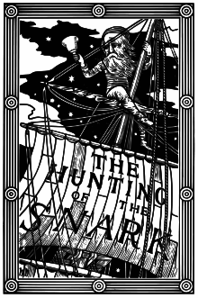

Wednesday, August 31, 2011
And now for something completely different . . .
The really touching thing is that he tried to make off with his lover. Of course, it wasn't rape but it certainly was theft.
Sipsey Street Exclusive: The Long Meeting They Didn't Invite the Press To -- Phoenix Bilateral Arms Trafficking Conference, 22-26 September 2009.
Well, well, well. Another Wikileaks cable. This time a report on a meeting that they didn't invite the press to. Note that it was immediately before the events described in "Meetings: Part 4." Note also where it was held: in "Gunwalker Bill" Newell's Phoenix.
Cable reference id: #09MEXICO2952
Subject Northern Border Conference Focuses Sights On Arms Trafficking Cooperation
Origin Embassy Mexico (Mexico)
Cable time Fri, 9 Oct 2009 22:31 UTC
Classification UNCLASSIFIED
Source http://wikileaks.org/cable/2009/10/09MEXICO2952.html
History First published on Thu, 25 Aug 2011 03:30 UTC
VZCZCXRO7260
RR RUEHCD RUEHGD RUEHHO RUEHMC RUEHNG RUEHNL RUEHRD RUEHRS RUEHTM DE RUEHME #2952/01 2822231
ZNR UUUUU ZZH
R 092231Z OCT 09
FM AMEMBASSY MEXICO
TO RUEHC/SECSTATE WASHDC 8584
INFO RUEHXC/ALL US CONSULATES IN MEXICO COLLECTIVE
RHMFIUU/DEPT OF JUSTICE WASHINGTON DC
RUEHC/DEPT OF LABOR WASHINGTON DC
RUEATRS/DEPT OF TREASURY WASHINGTON DC
RUCPDOC/DEPT OF COMMERCE WASHINGTON DC
RHMFISS/CDR USSOUTHCOM MIAMI FL
RUEAHLA/DEPT OF HOMELAND SECURITY
RUEABND/DEA HQS WASHINGTON DC RHEHAAA/NSC WASHINGTON DC
UNCLAS SECTION 01 OF 02 MEXICO 002952
SIPDIS
E.O. 12958: N/A
TAGS: PGOV [Internal Governmental Affairs] PREL [External Political Relations] PINR [Intelligence] KCRM [Criminal Activity] SNAR [Narcotics] MX [Mexico]
SUBJECT: NORTHERN BORDER CONFERENCE FOCUSES SIGHTS ON ARMS TRAFFICKING COOPERATION
¶1. (SBU) Summary: GOM and USG law enforcement officials huddled September 22-26 in Phoenix at the Northern Border Conference to discuss expanding cooperation on combating arms trafficking. Both sides support a greater exchange of information on firearms sales as well as relevant legislation on firearms, including statutes that speak to prosecuting arms traffickers. Future progress will rely on progress by sub-working groups on a wide range of action items in advance of a follow-on conference in Tapachula, Mexico at the end of October. End Summary. Participants
¶2. (SBU) Officials from the Mexican Army (SEDENA), Navy (SEMAR), the Attorney General's Office (PGR), the Federal Police (SSP), Tax Collection (SAT), Intelligence (CISEN), the President's Office, and Foreign Affairs (SRE) represented Mexico at the meeting. The PGR representatives included prosecutors, forensic experts and intelligence analysts. The U.S. delegation included representatives of the Arizona Attorney General's Office, ATF, CBP, DEA, the Defense Attach's Office, DOJ, ICE, FBI, ONDCP, the Phoenix Police Department, ONDCP and NAS. The DOJ representatives included prosecutors from Arizona, California, Colorado, New Mexico, Texas, Utah and the DOJ Criminal Division. All of the U.S. representatives invited to the conference participate in firearms trafficking interdiction and/or prosecution that includes operational or programmatic functions. Seeing is Understanding
¶3. (SBU) The conference was tailored to requests by the Mexican side. Off-site tours included a firearm licensee establishment, a gun show, the Phoenix Police department, and the ATF headquarters and firing range. These off-site tours highlighted vendor security and compliance, forensic processing of actual cases, and maintenance of firearm forensic evidence. In their classroom sessions, participants learned how U.S. officials detect and track straw purchasers of firearms (individuals who purchase multiple weapons for others or willingly allow their identity to be used by others to purchase firearms) using databases and E-trace (a program designed to trace weapons sales to the last vendor) to support investigations. PGR requested additional E-trace accounts to facilitate future tracing efforts, and ATF immediately granted five accounts.
¶4. (SBU) The conference also pinpointed several follow-up issues for the bilateral arms trafficking implementation group (GC Armas). Vetted units, such as the ICE BEST (Border Enforcement Security Task-force) unit, assume a key role in the investigation of information on arms movements between the two sides. Both sides agree on the need to establish guidelines for strengthening these vetted units. In addition, the U.S. and Mexican representatives discussed the creation of an inter-institutional group dedicated to firearm inspection and database information mining. This matter will require follow-up as GC Armas seeks to enhance the collection and utilization of intelligence from existing cases as well as current arms seizure forensics in order to connect the dots on trafficking patterns and traffickers. Can We All Just Share More?
¶5. (SBU) Conference participants agreed that effective prosecutions in each country rely on consistent data from firearm seizures on both sides of the border. At the very least, they need the following firearm data: (1) serial number (including obliteration information), (2) make and model, (3) importer information found on the weapon, (4) date of seizure, (5) location of seizure, (6) nature and circumstances of the seizure, (7) finder, seizing official, and forensic processor of the firearm, (8) caliber and action, (9) photograph and criminal history of individuals arrested, and (10) point of contacts for locating seized weapon.
¶6. (SBU) The two sides then need to share more information with each other. Septel will discuss the GOM desire to create a single database of all seized firearms -- which may MEXICO 00002952 002 OF 002 or may not be a realizable objective. In the meantime, though, the GOM and USG agreed to explore the potential for sharing existing databases, with the USG on the hook to explore its international protocols in order to allow PGR CENAPI (the investigative branch of the Mexican Attorney General) greater access to E-trace. Once the sides embrace a structure and guidelines for sharing information, each country will need to develop a consistent statistical method for measuring fruitful investigations and successful prosecutions. Such statistics will lend themselves to tracking trends, developing targets for in-bound and outbound port interdiction, creating "lookouts" in targeting systems, and focusing attention on arms trafficking danger spots in each country.
¶7. (SBU) The complexity of U.S. laws, in particular, the differences between individual states and U.S. federal law, is a source of immense confusion to Mexican Officials. Both countries pledged to share translations of federal firearms laws with an aim to foster greater GOM appreciation for the kind of information required for bilateral case development and the strict rules that U.S. law enforcement faces in the apprehension and prosecution of offenders. Inasmuch as laws dictate the forensic requirements needed for crime scene management and evidence handling, each country will develop training programs tailored to established guidelines.
¶8. (SBU) USG representatives agreed to explore creative prosecution strategies to attack firearms trafficking, including possible reliance on statutes involving conspiracy to distribute and possession with intent to distribute, and RICO (Racketeering Influenced Corrupt Institutions). The U.S. conveyed its readiness to train prosecutors on both sides of the border on using these possible tools more effectively. In addition, the U.S. side said that it would explore expanding the use of Article IV of the U.S. and Mexico Extradition Treaty, which allows the extradition of Mexican nationals from the U.S. to Mexico to be prosecuted for trafficking weapons that fall into the hands of organized criminals in Mexico.
¶9. (SBU) Comment: The Phoenix Bilateral Arms Trafficking Conference opened the eyes of participants to the immense amount of work that needs to occur on both sides of the border to abate the flow of illegal weapons across the border. The Mexicans acquired a better appreciation of the challenges facing U.S. law enforcement in the investigation and prosecution of individuals or entities involved in firearm crimes. The USG pledged to provide Mexican officials with training, as appropriate, to facilitate compliance with U.S. legal requirements. Meanwhile, both sides agreed on the need for greater information sharing on arms trafficked and seized. Each side will need to continue to engage aggressively on the issues raised at this conference as well as the programs identified in the GC Armas sub-working groups in order to demonstrate adequate progress in the run-up to the Tapachula Arms Conference scheduled for the end of October. End
Sipsey Street Exclusive: Wikileaks Cable -- They KNEW the 90% lie was bullshit. IN OCTOBER 2009!
Tip of the boonie hat to Stephen for this link.
Reference id 09MEXICO3109 aka Wikileaks id #231900
Subject Mexico Arms Trafficking: Access To Confiscated Weapons, A Necessary Step
Origin Embassy Mexico (Mexico)
Cable time Wed, 28 Oct 2009 23:50 UTC
Classification UNCLASSIFIED
Source http://wikileaks.org/cable/2009/10/09MEXICO3109.html
History First published on Thu, 25 Aug 2011 03:30 UTC
VZCZCXRO3834
RR RUEHCD RUEHGD RUEHHO RUEHMC RUEHNG RUEHNL RUEHRD RUEHRS RUEHTM DE RUEHME #3109/01 3012350
ZNR UUUUU ZZH
R 282350Z OCT 09 ZFR
FM AMEMBASSY MEXICO
TO RUEHC/SECSTATE WASHDC 8818
INFO RUEHXC/ALL US CONSULATES IN MEXICO COLLECTIVE
RHMFIUU/DEPT OF JUSTICE WASHINGTON DC
RUEHC/DEPT OF LABOR WASHINGTON DC
RUEATRS/DEPT OF TREASURY WASHINGTON DC
RUCPDOC/DEPT OF COMMERCE WASHINGTON DC
RHMFISS/CDR USSOUTHCOM MIAMI FL
RUEAHLA/DEPT OF HOMELAND SECURITY
RUEABND/DEA HQS WASHINGTON DC RHEHAAA/NSC WASHINGTON DC
UNCLAS SECTION 01 OF 02 MEXICO 003109
PLEASE CANCEL THIS ENTIRE CABLE. (ZFR IMI ZFR). A NEW CABLE WILL BE RESEND WITH NEW MRN AND MCNS. THANKS AND REGARDS.
SIPDIS
E.O. 12958: N/A
TAGS: PGOV [Internal Governmental Affairs] PREL [External Political Relations] PINR [Intelligence] KCRM [Criminal Activity] SNAR [Narcotics] MX [Mexico]
SUBJECT: MEXICO ARMS TRAFFICKING: ACCESS TO CONFISCATED WEAPONS, A NECESSARY STEP MEXICO 00003109 001.2 OF 002
¶1. (SBU) Summary. Mexico is a awash with illegal firearms from unknown suppliers that arm organized crime groups and fuel escalating violence. Investigation and prosecution of illegal arms dealers is thwarted by in-fighting among Mexican institutions and legal restrictions that prevent the sharing of important information. Successful prosecution of illegal arms traffickers will depend on U.S. law enforcement agencies gaining access to confiscated weapons to form actionable intelligence and launch investigations. End Summary
A Recipe for Problems: Too Many Cooks, Too Little Love
¶2. (C) Currently, government warehouses throughout Mexico have approximately 140,000 weapons either confiscated from crime scenes or gathered from check points. Some of these weapons -- in storage for over 10 years -- are suspected to have little investigative value. The warehouses are the responsibility of the Mexican Army (SEDENA), which maintains a piece-meal list of information on at least 64,000 weapons collected since the start of the Calderon administration in December 2006. SEDENA's decision to share this information with us in July of this year prompted ICE and ATF to review the data in an effort to open criminal investigations against individuals suspected of knowingly selling weapons to individuals linked to drug trafficking organizations (DTOs). DIA analysts initiated a separate effort to identify the origin of the weapons as well as trafficking patterns. Unfortunately, the information is incomplete and lacks source data, a reflection of the inconsistent and uneven collection methods employed by Mexican Federal Police (SSP), Mexican Attorney General (PGR), and SEDENA officials in their investigation of confiscated weapons. (Septel analyzes efforts to systematically collect and share weapons forensic information.)
¶3. (SBU) PGR assumes legal authority for confiscated weapons stored in warehouses that correspond to Mexican criminal investigations. Once the PGR completes its initial investigation, it turns over the actual weapon and all information it has gathered over to the Mexican judiciary, which retains jurisdiction over the weapon over the course of judicial proceedings. Upon termination of all investigative and judicial proceedings, SEDENA is assigned responsibility for disposition or destruction of the weapons -- a process that could take years.
¶4. (SBU) Besides the sheer magnitude of the weapons collected, the GOM's disjointed approach for managing the weapons it stores in its warehouses has fostered an ad-hoc system with many accountability gaps. On frequent occasions, GOM agencies -- with their conflicting priorities and competing responsibilities -- openly dispute who has the lead on key arms investigations. PGR holds tightly to its authority as the prosecutorial, investigative, and forensic arm of the GOM; while the SSP retains its position as the lead federal law enforcement agency, an investigative role recently expanded in new legislation. Both agencies have the authority to conduct crime scene investigation and collect forensic evidence, yet information sharing across bureaucratic lines is virtually nonexistent. SSP generally agrees to share information on cases only when the case is transferred to the prosecutor (PGR).
¶5. (SBU) U.S. law enforcement agencies have a strong interest in obtaining information from weapon seizures as this information forms the basis of intelligence, follow-on domestic investigations, and potential prosecutions. A February 2009 Mexican Supreme Court ruling, however, restricts any access to weapons that are involved in court cases. The USG has had limited success obtaining access to warehouses and weapons, with the exception of some high-level visits, affording rare opportunities to get a look inside the warehouses. Even though the GOM provided information on 64,000 confiscated arms, the incomplete information needs to be verified and experts need access to the actual weapons to obtain additional evidence -- source data, obliteration data and pictures -- to provide the basis for investigations and subsequent U.S. judicial cases. SEDENA insists it is willing to grant U.S. law enforcement agencies access to confiscated weapons and blames PGR for any denials. In mid-August, SEDENA reviewed with us twelve instances in which its approval of our official requests for access were overturned MEXICO 00003109 002.2 OF 002 by the PGR, based on the February 2009 Supreme Court case.
¶6. (SBU) Comment. Claims by Mexican and U.S. officials that upwards of 90 percent of illegal recovered weapons can be traced back to the U.S. is based on an incomplete survey of confiscated weapons. In point of fact, without wider access to the weapons seized in Mexico, we really have no way of verifying these numbers. (Emphasis supplied, MBV.) Joint efforts to develop intelligence that can serve the impetus for investigations and prosecutions of individuals or companies that market firearms to the cartels, will require Mexican and USG law enforcement agencies to share essential crime scene forensic information on a real time basis. Post law enforcement agencies will continue to work closely with their Mexican counterparts to break down institutional divisions and facilitate more information sharing on arms trafficking cases both among the Mexican agencies and with U.S. partners.
Sipsey Street Exclusive: "Meetings, Part 4." 30 September 2009: "Chooser of the slain." DAG David Ogden Rides the Gunwalker Skies.
Valkyrie: from Old Norse valkyrja "chooser of the slain"

"Things like this happen because of meetings. People sit in meetings and they decide what they want to happen. And then they take decisions, make policy and implement that policy to achieve those ends." He added, "That's why State is so nervous. They signed off on this. In a meeting." . . . He added, "Of course the meeting transcripts won't reflect the truth so plainly, but then neither did the Wannsee Conference. These bastards always talk in riddles about what they're really after. Watch what they do, not what they say." -- Old DC intelligence community member, quoted in Meetings: Part One.

"Choosers of the slain" no longer ride horses in the sky. This is the 21st Century after all.
At 7AM Eastern on Wednesday, 30 September 2009, United States Deputy Attorney General David W. Ogden was driven to Washington Reagan Airport. At 10:30 he flew out on US Airways Flight # 407. Ogden was headed for Phoenix, Arizona and, later, Houston, where there was big stuff happening that Ogden and his bosses at DOJ and the White House wanted him to help draw attention to. He arrived just in time at 12:24PM Mountain.
His coming was heralded, as these things often are, with a press release:
PHOENIX, Sept. 29 /PRNewswire-USNewswire/ -- Deputy Attorney General David W. Ogden and U.S. Attorney Dennis K. Burke of the District of Arizona will be joined by federal and local law enforcement partners to officially unveil the new Organized Crime Drug Enforcement Task Force (OCDETF) Strike Force site in Phoenix TOMORROW, SEPTEMBER 30, 2009, at 1:30 P.M. MST (4:30 P.M. EST).
Federal and local law enforcement partners of the OCDETF Strike Force include DEA; ATF; FBI; the U.S. Marshals Service; the Criminal Division of the Internal Revenue Service; U.S. Immigration and Customs Enforcement; the Arizona Department of Public Safety; and the Phoenix, Mesa, and South Tucson Police Departments. The OCDETF Strike Force is an intelligence driven program designed to target the most significant drug trafficking organizations in Arizona and its outer regions.
WHO: Deputy Attorney General David W. Ogden
U.S. Attorney for the District of Arizona Dennis K. Burke
Acting Director of ATF Kenneth Melson
Special Agent in Charge DEA Elizabeth Kempshall
Acting Director of the ICE Office of Investigations Kumar Kibble
WHAT: Remarks and Q & A
WHEN: TOMORROW, SEPTEMBER 30, 2009
1:30 P.M. MST (4:30 P.M. EST)
WHERE: DEA Phoenix Division, 3010 N. Second Street, Phoenix, Ariz.
OPEN PRESS
NOTE: Media may begin to arrive at 1:00 p.m. MST. Cameras and microphones must be pre-set by 1:15 a.m. MST. A mult box is available. All media must present government-issued photo I.D. (such as a driver's license) as well as valid media credentials. Press inquiries regarding logistics should be directed to Sandy Raynor, Public Information Officer for the District of Arizona, (602) 514-7625.
SOURCE U.S. Department of Justice
Observant readers will note that two of the featured speakers above who participated with Ogden that day are now officially disgraced because of the Gunwalker Scandal. One, Ken Melson, has been shunted to a rubber room job made for him in the Justice Department to keep him on the payroll. The other, Janet Napolitano's former flunky and U.S. Attorney Dennis Burke has been forced to resign, his Gunwalking days over (except for future testimony under oath and possible imprisonment).
After landing, Ogden was driven to the DEA offices at 3010 North 2nd Street where, a 1 o'clock, he met with USA Dennis Burke and the Special Agents in Charge of the various federal law enforcement agencies including DEA's Elizabeth Kempshall, ATF's William Newell, about to become "Gunwalker Bill," and the SACs of FBI, ICE, etc.
They likely didn't have time to talk much, because the "OCDETF Strike Force Space Unveiling and Press Conference" began at 1:30 Mountain.
From the DOJ press release afterward:
PHOENIX—Deputy Attorney General David W. Ogden, along with U.S. Attorney Dennis K. Burke, Acting Director of the Bureau of Alcohol, Tobacco and Firearms Kenneth Melson, Drug Enforcement Administration Deputy Chief of Operations Dave Gaddis, and other federal and local officials today officially unveiled the new Organized Crime Drug Enforcement Task Force (OCDETF) Strike Force site in Phoenix.
The Phoenix Strike Force is housed in the offices of the DEA Phoenix Division. The OCDETF Strike Force functions as a cohesive unit by bringing together representatives of the partner agencies to more effectively focus on specific investigative targets. Federal, state, and local agencies represented include the DEA; ATF; the Federal Bureau of Investigation (FBI); the U.S. Marshals Service (USMS); the Criminal Division of the Internal Revenue Service (IRS); U.S. Immigration and Customs Enforcement (ICE); the Arizona Department of Public Safety; the Maricopa County Sheriff’s Office; and the Phoenix, Mesa, and South Tucson Police Departments.
“OCDETF Strike Forces, like the one here in Phoenix, reflect the kind of collaborative law enforcement approach that allows us to most effectively combat the vicious drug trafficking organizations such as the Sinaloa Cartel that contribute to violence and other crime in neighborhoods here and across this country,” said Ogden. “Now in its 27th year, the OCDETF program has been a model of interagency coordination, innovation, and teamwork. This strategy recognizes that the most successful way to fight these intricate criminal networks is by combining the strengths, resources, and expertise of federal, state and local agencies.”
“By concentrating experts from so many agencies in one place, the strike force model allows for real-time sharing of intelligence and deployment of strategy,” stated U.S. Attorney for the District of Arizona, Dennis K. Burke. “That advantage allows strike force agents to react more decisively to interdict the actions of large, sophisticated and violent drug trafficking organizations. Coordination leads to better intelligence, quicker reaction and more convictions.”
The Phoenix Field Division formed an OCDETF Strike Force in August 2008, that focuses completely on investigations of command and control elements of the Sinaloa Cartel and Arizona-based distribution cells associated with the Cartel.
Since its inception, the Phoenix Strike Force has indicted a Sinaloa Cartel associated CPOT (Consolidated Priority Organization Target) and RPOT (Regional Priority Organization Target), conducted in excess of 80 wire taps of Sinaloa Cartel related Drug Trafficking Organizations, and has been directly or indirectly responsible for the seizure of over $150 million dollars in U.S. currency, associated assets, and financial instruments. In addition, information provided by the Phoenix Strike Force has led to the seizure of over $29 million in cash and assets in Mexico and 93 arrests in the United States.
“DEA is successfully striking back at the Mexican Cartels that use Phoenix as a major transshipment point for their drug trafficking operations,” said DEA Acting Administrator Michele M. Leonhart. “In coordination with the Calderon Administration, we are targeting and arresting major drug traffickers impacting Arizona, disrupting their operations both in Mexico and the United States. This multi-agency Strike Force, which has already helped take down significant Sinaloa Cartel leadership, is a proven law enforcement tool for tackling the challenges we face along the Southwest Border.”
“Within the OCDETF arena, ATF maintains its focus on major drug traffickers who use firearms to further their trade and violate firearms-trafficking laws, as well as laws relating to explosives,” said ATF Acting Director Kenneth Melson. “Firearms often serve as a form of payment for drugs and, together with explosives and arson, are used as tools by drug organizations for purposes of intimidation, enforcement, and retaliation against their own members, rival organizations, or the community in general. ATF’s jurisdiction and expertise make it a well-suited partner in the OCDETF program.”
Based on the success of the Phoenix Strike Force Group, an additional Strike Force Group was formed in the Phoenix Field Division’s Tucson District Office in June 2009. The Tucson Strike Force Group is comprised of law enforcement personnel from DEA, ATF, ICE, FBI, and the South Tucson Police Department. Both Strike Force Groups will continue to pursue OCDETF case designations for federal prosecution and will work in a complementary role with the Arizona HIDTA (High-Intensity Drug Trafficking Area).
I have written before, back in May, of OCDETF, the OFC and its COMPASS database in the grand scheme of Gunwalking: "DOJ deflects blame down food chain. Bad news for designated patsies & for the rogue field office theory. Meet Compass, the key to Gunwalker intel."
At the end of that article, I commented:
Got an idea now of how inter-related and seamless the Obama administration has made the intelligence operations directed south of the border? And what part of "deconfliction" and "integration" would shield any of these agencies from Gunwalker scandal knowledge?
Here's a suggestion for Senator Grassley and Representative Issa. Get yourselves a computer COMPASS and see which way the Gunwalker scandal needle points.
And here is what DAG Ogden had to say that afternoon in Phoenix. At the risk of boring some of you, it is important. Read it and consider, given the Obama administration's considerable efforts at "coordination," "deconfliction," and "seamless effort," just how Gunwalker could have happened:
a. Without people in every other agency linked into OCDETF knowing about it?
b. Without operational direction across and through those various agencies from on high, and given that they are spread from Treasury to Justice to DHS, from the National Security Council and the White House itself?
Answers to both A & B: It couldn't. But don't believe me. Here's Ogden:

Good afternoon. Thank you for joining us to mark the official opening of the Phoenix OCDETF (Organized Crime Drug Enforcement Task Force) Strike Force. This is an important day. The OCDETF program supports and coordinates the collaborative law enforcement approach that positions us best to effectively combat the vicious drug trafficking organizations, known as the Mexican drug cartels, that contribute to so much of the violence and crime in neighborhoods across this country.
These criminal organizations are a national security threat to Mexico and a threat to public safety and security in the United States. They are responsible for the steady stream of illicit drugs -- cocaine, heroin, methamphetamine, or marijuana -- that cross our border from south to north. We believe that they are responsible for 80 to 90 percent of the illegal drugs sold in the United States. They are also responsible for the deadly flow of illegal firearms across the border, which enable the terrible violence and terror in some Mexican communities.
These sophisticated criminal organizations operate across local, state, and national borders creating a challenge for law enforcement in both countries. To combat this persistent and pernicious threat, we must also be seamless in our operations by acting as a multi-agency team.
The OCDETF Program -- now in its 27th year -- is a model of interagency coordination, innovation, and teamwork, and is the cornerstone of the Justice Department’s anti-cartel strategy. That strategy recognizes that the most effective way to fight these large criminal networks is by combining the strengths, resources, and expertise of federal, state and local investigative and prosecutorial agencies. OCDETF serves as the organizational structure for the formation of prosecutor-led, multi-agency task forces. It focuses the efforts of these task forces through the use of intelligence-based targeting to drive large scale arrests, prosecutions and asset forfeitures.
These teams are extraordinarily capable. They combine:
* DEA’s unique knowledge of international drug trafficking organizations, and its working relationships with foreign, state, and local law enforcement authorities;
* FBI’s experience in gathering and analyzing intelligence data, investigating gangs and other complex criminal organizations, as well as its expertise in handling sensitive public corruption matters;
* ICE’s expertise in investigating goods and currency involved in international contraband smuggling and in confronting and interdicting drug and gun traffickers;
* ATF’s expertise in investigating illegal firearms and explosives, which have long been the drug traffickers’ tools of the trade;
* IRS’s knowledge of sophisticated illegal financial operations, the tax code, money laundering statutes, and asset forfeiture laws to thoroughly investigate the dealings of the targeted organizations and dismantle the economic infrastructure that fuels their operations;
* the U.S. Marshals Service's skills in fugitive investigations and apprehension of criminals in the U.S. and abroad who have the resources to try to hide anywhere in the world;
* the Coast Guard’s maritime reach and expertise, and
* the critical local knowledge of State and local law enforcement officers who are intimately familiar with the individuals living in the neighborhoods that they serve. They know how the criminals conduct their activity and its impact on their communities. They also have invaluable contacts with local businesses and community leaders who all play a critical role in fighting crime.
OCDETF supports such cooperation in various ways, but co-located strike forces, such as the one we announce today, are extraordinarily effective vehicles for OCDETF’s team concept. In many places, OCDETF pulls together its coalition of law enforcement entities by relying upon “virtual task forces” where members report to work each day at their respective agency’s offices and come together as needed to work on particular investigations and prosecutions.
But in an effort to better foster the enhanced intelligence sharing and coordination necessary to achieve the best results from this intelligence-driven, strategic enforcement approach, OCDETF has established co-located strike forces in key cities across the country.
Working side-by-side every day, the members of the OCDETF Strike Forces are able to focus their efforts, eliminate superfluous work, and save valuable resources. As a result, they have been able to take the fight against the most notorious international drug cartels to new levels. Coordinating the efforts of their member agencies, OCEDTF Strike Forces were integral participants in the major successes in this fight - Operation Xcellerator against the Sinaloa Cartel, Project Reckoning against the Gulf Cartel, and last month’s coordinated arrests of members of the La Familia Cartel.
OCDETF currently has co-located strike forces in nine key cities: Atlanta, Boston, El Paso, Houston, New York, San Diego, San Juan, Tampa, and now, here in Phoenix. These strike forces also function as a central point of contact for OCDETF agents and prosecutors nationwide, gathering intelligence and disseminating investigative leads throughout the neighboring areas. Although these strike forces were established for the same basic purpose, each is unique to the region it serves and tailors its approach to the nature of the threat there.
The Phoenix Strike Force focuses its efforts on major drug trafficking organizations operating along the Southwest Border. By bringing together agents from DEA, ICE, ATF, FBI, IRS, the Marshals Service, and state and local law enforcement agencies, the Phoenix Strike Force is able to leverage the expertise of six federal and five local law enforcement agencies to disrupt and dismantle drug trafficking cartels. In its first months of operation, working out of provisional space while this Strike Force facility was under construction, the Phoenix Strike Force has already achieved great success. It conducted 89 wiretap investigations and was responsible for the indictment of a Mexican national who is on the United States’ list of high level international drug traffickers, along with members of his drug trafficking organization.
The strike force’s work also led to the indictment of a drug trafficker who had been identified as a target of regional significance, 68 arrests, and the seizure of $45 million in cartel assets, 106 kilograms of cocaine, 146 pounds of methamphetamine, and 4,000 pounds of marijuana. We look forward to the Phoenix Strike Force continuing, and even expanding upon these remarkable achievements as it moves into its permanent facility.
There are many people who contributed to these successes and I would like to take a moment to recognize a few of them. Stuart Nash, an associate in my office, has provided steady leadership to this effort.
* SAC Beth Kempshall, and ASAC Doug Coleman of the DEA,
* SAC William Newell and ASACs George Gillette and Ken Melson and Jim Needles of the Bureau of Alcohol, Tobacco, and Firearms, and Explosive
* SAC John Lewis and ASAC Steve Hooper of the Federal Bureau of Investigation, and finally,
* Phoenix Police Chief Jack F. Harris, have been instrumental partners in making OCDETF what is it today.
Please join me in congratulating the members of the Phoenix OCDETF Strike Force for the outstanding work they have done the last several months and to congratulate you on moving in to your new site. You are among the most dedicated individuals in law enforcement. On behalf of the Department, I want to thank you for all that you do. Keep up the good work.
I’d like to turn it over to the new United States Attorney for the District of Arizona, Dennis Burke.
By 2 o'clock, Ogden was enroute to Macayo's Restaurant at 4001 North Central for a working lunch with Burke and the US Attorneys Office executive management.

It is not reported if either Ogden or Burke had "The Best Tamale in Town."
By 3:15 Ogden was on his way to Two Renaissance Square, 40 North Central, Suite 1200 -- the offices of Dennis K. Burke for an "All Hands Meeting" in the 12th floor press room. By 4:10 he went down a floor for a meeting with the supervisory US Attorneys and a briefing on "district initiatives." He also had a meeting with the senior AUSAs and SLCs.
By 5:15 he was headed back to the Phoenix airport where at 6:56 that evening he flew out on US Airways Flight # 277 enroute to Houston.
He got into the Crown Plaza Hotel on Smith Street after midnight, the end of a long, productive day.
The following day, Ogden would speak on the subjects of Project Gunrunner, Gunrunner Impact Teams (GRITs) and "The Surge."
It would be from The Surge that the Gunwalker Scandal would issue forth.
Coming up in "Meetings, Part 5": Houston, The Surge and "Gloryholes."
Claire Wolfe makes me laugh.


She refers to "Sipsey snark."
My reply, awaiting moderation:
“Sipsey snark” Moi? Oh, well, now that you mention it . . .
Well, isn't this special? Racial collectivists thump their chests.
"Latino group claims Aztlán war in next five years."
Of course, eager for a three-sided (or four-sided, or five-sided) race war, the Neo-Nazi site Stormfront was happy to pass the good news. Typical comment:
There's an essay here for me, but not today. Too busy.
Phoenix-based Nuestros Reconquistos claims that there will be a war very similar to the Civil War fought in the next five years. “La Raza and MEChA have already talked to Latinos and Phoenix and explained that Latinos need to arm themselves for war,” says Nuestros Reconquistos President Manuel Longoria.
Cecilia Maldonado of Chicanos Unidos Arizona isn’t hoping for any sort of war, but believes it may be unavoidable. “For generations, our people have prepared us to take back the lands of the Southwest that were stolen from our Mexican ancestors. Because of the bad economy and many racist laws, Latinos will be forced to fight sooner than later,” says Mrs. Maldonado.
Latino groups believe they have enough people in states such as California, Nevada, Arizona, New Mexico, and Texas to successfully wage a war on the United States. Who’s side will you be on?
Of course, eager for a three-sided (or four-sided, or five-sided) race war, the Neo-Nazi site Stormfront was happy to pass the good news. Typical comment:
Bring It On!
The sooner we get down to it the sooner we can start fixing the problem!
And, with any luck it will rile up the negros so we can do a two-for-one.
There's an essay here for me, but not today. Too busy.
Michelle Malkin on "The Night of the Short Knives." "Screw up, move up, cover up: It’s the Holder way, the Obama way, the Washington way."
In the New York Post:
Keep your friends close and your henchmen on the verge of spilling all the beans closer.
There’s been only one visible Fast and Furious resignation: US Attorney Dennis Burke in Phoenix, who quietly stepped down on Tuesday. One of his last acts? Opposing the request of murdered Border Patrol Agent Brian Terry’s family to qualify as crime victims in a court case against the thug who bought the Fast and Furious guns used in Terry’s murder.
The fish rots from the head down, of course. DOJ is run by Eric Holder, the Beltway swamp creature who won bipartisan approval for his nomination -- even after putting political interests ahead of security interests at the Clinton Justice Department in pushing presidential pardons for both big donor Marc Rich and several Puerto Rican FALN terrorists.
Screw up, move up, cover up: It’s the Holder way, the Obama way, the Washington way. And innocent Americans pay.
Tuesday, August 30, 2011
Falling under the heading of "Mistakes Were Made." Marvelous local reaction story on the Burke resignation.
U.S. Attorney for Arizona resigns in wake of Fast and Furious investigation.
Right you are, Dennis. but so did your boy.
"If his resignation is tied to Fast and Furious, it's ridiculous. It would be absolutely outrageous for 'Justice Main' to take it out on Dennis and make him the fall guy," DeConcini said. "It's just typical Washington cronyism. It just shows you how incompetent government can be to save themselves. It appears they screwed up, based on congressional hearings."
Right you are, Dennis. but so did your boy.
The Night of the Short Knives: "Scratch one flattop." Melson transferred to a rubber room job at DOJ, Burke forced to resign.

Japanese light carrier Shoho, Battle of the Coral Sea, 6 May 1942.
Meanwhile, American warplanes located the Moresby invasion force (again), sinking the light carrier Shoho. "Scratch one flattop," radioed Lieutenant Commander Robert Dixon, leader of the Lexington-based dive bombers that sent Shoho to the bottom. It marked the first time during World War II that U.S. naval forces sank a major Japanese combatant. -- In From the Cold.
So, it figures that the biggest day in the Gunwalker Scandal so far would happen on the morning I'm out selling some stuff to raise some more legal fees. This started with a tip early this morning first to David Codrea and then to me that Melson's office had been cleaned out over the weekend and he was being transferred to a rubber room job at DOJ to keep him safely on the payroll and minimize his motivations to really lay the whole thing out for the Congress.
Away from my computer, I used my Boost Mobile ghetto phone to alert several news folks to the event and they immediately set to work verifying -- which they did and more.

"Get outta here and over to your rubber room before you get ME transferred to TSA!"
I think David was still able to scoop them here: Breaking: Sources claim Melson out at ATF.
Bureau of Alcohol, Tobacco, Firearms and Explosives Acting Director Kenneth E. Melson has been transferred from ATF to a position at the Justice Department, sources say.
One source speaking on condition of confidentiality informed this reporter that Melson was called to Attorney General Eric Holder's office on Friday and that his office was cleared out over the weekend.
Codrea also later added a statement from Darrell Issa:
While the reckless disregard for safety that took place in Operation Fast and Furious certainly merits changes within the Department of Justice, the Oversight and Government Reform Committee will continue its investigation to ensure that blame isn’t offloaded on just a few individuals for a matter that involved much higher levels of the Justice Department. There are still many questions to be answered about what happened in Operation Fast and Furious and who else bears responsibility, but these changes are warranted and offer an opportunity for the Justice Department to explain the role other officials and offices played in the infamous efforts to allow weapons to flow to Mexican drug cartels. I also remain very concerned by Acting Director Melson’s statement that the Department of Justice is managing its response in a manner intended to protect its political appointees. Senator Grassley and I will continue to press the Department of Justice for answers in order to ensure that a reckless effort like Fast and Furious does not take place again.
Moments after that confirmation, I learned by cell phone that Dennis Burke, Napolitano's protege and U.S. Attorney in Phoenix, had been forced to resign and his equally-culpable assistant Hurley had been laterally transferred to the civil side from the criminal. After David, a number of news outlets started hitting the Net with the story, and more details.
Janet Napolitano's protege lickspittle, Dennis Burke, is out of the Gunwalking business.

William LaJeunnesse at FOX: "ATF Director Reassigned; U.S. Attorney Out Amid 'Fast and Furious' Uproar."
Acting ATF Director Kenneth Melson has been reassigned to a lesser post in the Justice Department and the U.S. attorney for Arizona was also pushed out Tuesday as fallout from Operation Fast and Furious reached new heights.
Melson's step down from his role as head of the Bureau of Alcohol, Tobacco, Firearms and Explosives to the position of senior adviser on forensic science in the Department of Justice's Office of Legal Programs is effective by close of business Tuesday, administration officials announced. U.S. Attorney for the District of Minnesota B. Todd Jones will replace Melson.
U.S. Attorney for Arizona Dennis Burke, one of the officials closely tied to Fast and Furious, is also a casualty in a shakeup tied to the botched gun-running program. Burke was on the hot seat last week with congressional investigators and, according to several sources, got physically sick during questioning and could not finish his session.
The purge of those responsible for the firearms trafficking scandal continued as new documents reveal a deeper involvement of federal agencies beyond ATF.
In Phoenix, Assistant U.S. Attorney Emory Hurley, who oversaw Fast and Furious on a day-to-day basis, was reassigned from the criminal to civil division. Also in Phoenix, three out of the four whistleblowers involved in the case have been reassigned to new positions outside Arizona. Two are headed to Florida, one to South Carolina.
Hurley's reassignment came after three ATF supervisors responsible for the operation were promoted. William G. McMahon, a former deputy director of operations, took over the Office of Professional Responsibility. Field supervisors William D. Newell and David Voth also moved up despite heavy criticism. . .
According to the Justice Department, Jones will take over ATF in place of Melson beginning Wednesday, and will continue to serve as a U.S. attorney. A permanent replacement at ATF would need to be confirmed by the U.S. Senate.
"As a seasoned prosecutor and former military judge advocate, U.S. Attorney Jones is a demonstrated leader who brings a wealth of experience to this position," Holder said. "I have great confidence that he will be a strong and steady influence guiding ATF in fulfilling its mission of combating violent crime by enforcing federal criminal laws and regulations in the firearms and explosives industries."
Without mentioning either Melson or Burke's role in the Fast and Furious fiasco, Holder also praised the two for their "dedication" and "commitment" to the Department of Justice.
Simultaneously, Sharyl Attkisson at CBS reported "Gunwalker scandal: ATF director out of top job."
LA Times: "Kenneth Melson, who oversaw ATF's Fast and Furious, steps down."
Katie Pavlich over at Town Hall picked up on the story as well, "ATF 'Shakeup' Over Operation Fast and Furious." She reported:
I contacted the Obama DOJ press office earlier this morning to ask if this was a promotion for Melson and was told "I don't have anyone who can answer your question at this time." I was then was told someone would be contacting me later this afternoon about the issue. There is a strong possibility Melson is being promoted, either for helping the Obama Adminstration to implement more gun control regulations or as a way to get him to shut up after giving testimony to the House Oversight Committee, rather than punishing him for his involvement in the lethal scandal, afterall, three agents who were the brains behind Fast and Furious were promoted just two weeks ago.
The man waiting in the wings to fill Melson's position at ATF is Andrew Traver. Traver is an anti-Second Amendment, anti-gun Chicago zealot who helped fake the following "news story" about "semi-automatic" weapons.

I too thought Traver was next in line, but apparently the Obamanoids have decided that he is too radioactive. The FOX affiliate in MN has this to say about him.
Who is B. Todd Jones?
Jones has served as U.S. Attorney for the District of Minnesota under two presidential administrations. He first served from 1998 to 2001 and was nominated again in 2009 by President Obama.
During his several years as a federal prosecutor, Jones conducted grand jury investigations and has been the lead trial lawyer in many federal prosecutions involving drug trafficking, firearms, financial fraud and violent crime.
Following admission to the Minnesota bar, Jones went on active duty in the U.S. Marine Corps, where he served as both a trial defense counsel and prosecutor in a number of courts martial proceedings. Jones received his B.A. from Macalester College in 1979 and his J.D. from the University of Minnesota Law School in 1983.
All of these events amount to is a "Night of the Short Knives." This is another "modified limited hangout." Burke is the only one who is finished as an employee of DOJ. The rest are being shuffled around to facilitate the cover-up, which at the moment is pretty uncovered.
By the time I got home and got the computer fired I had a number of congratulatory messages. The one I laughed the hardest at was Pete's from over at Western Rifle Shooters. He sent the following:
"Scratch One Flattop. Well done, gentlemen. . . Keep hammering."
Of course I understood the reference.
And I assure you, we will keep hammering. From Issa's statement, I'd say he's going to keep hammering, too.

David's radio gig comes to an end, unfortunately.
Switching off War on Guns Radio.
Not that it was his fault. I thought David did a great job, but, well, in my experience (I called in pretty much every day to do a Gunwalker segment) the station had issues. I hope he's able to do it again, although right now we've got other projects on the burner that could pay off with greater effect and even, perhaps, a little dough.
Note to self: One of these days I've got to get Skype as well.
Not that it was his fault. I thought David did a great job, but, well, in my experience (I called in pretty much every day to do a Gunwalker segment) the station had issues. I hope he's able to do it again, although right now we've got other projects on the burner that could pay off with greater effect and even, perhaps, a little dough.
Note to self: One of these days I've got to get Skype as well.
Light posting this morning.
Have to go out and raise some money to keep the goblins away. Will make it up to you this afternoon.
Mail report.
Saturday: None.
Monday: Two letters containing subscriptions, God bless 'em. One from Huntsville Al and another from Corpus Christi TX. Again, thanks. Three postcards from same sender in Santa Barbara: 1 dated 23 August, postmarked 24 August. 1 dated 24 August, postmarked 25 August. 1 dated 25 August, postmarked 26 August. These babies seem to like to travel in bunches.
Monday: Two letters containing subscriptions, God bless 'em. One from Huntsville Al and another from Corpus Christi TX. Again, thanks. Three postcards from same sender in Santa Barbara: 1 dated 23 August, postmarked 24 August. 1 dated 24 August, postmarked 25 August. 1 dated 25 August, postmarked 26 August. These babies seem to like to travel in bunches.

Monday, August 29, 2011
If this guy knows one actual, directly-sourced fact about the Gunwalker Scandal, I’ll eat my boonie hat.
Behind Operation Fast & Furious – the Islamic Connection.
Nice disinformational pimp job off a dead Border Patrol agent.
Nice disinformational pimp job off a dead Border Patrol agent.
Praxis: Russian use of rifle grenades in Chechnya.

Russian soldier takes a break in Second Chechen War. Note modern rifle grenades on rifles in background.
With a tip of the boonie hat to John P, this comes from MicroBalrog: "The Mountain Echo – Small Arms in Mountainous Areas."
In Transdnistria and Karabakh, in 1992, a simple device was introduced that enabled using hand-grenades like Western rifle grenades. An F-1 grenade, fired from behind cover to a range of up to 80 meters, is far more effective than a VOG, which makes it extremely relevant in close-range combat.

The Russian F-1 hand grenade was first introduced in World War II and has been used in combat since all over the world. It is interesting that the Russians resorted to issuing adaptors of the US type (seen below) to project F-1s at greater distance.


Sunday, August 28, 2011
Sipsey Street Exclusive: "Meetings, Part 3." H. Marshall Jarrett, the reliable political hatchet man. "Melson is unethical."
The Office of Professional Responsibility, reporting directly to the Attorney General, is responsible for investigating allegations of misconduct involving Department attorneys that relate to the exercise of their authority to investigate, litigate or provide legal advice, as well as allegations of misconduct by law enforcement personnel when related to allegations of attorney misconduct within the jurisdiction of OPR. . . The objective of OPR is to ensure that Department of Justice attorneys continue to perform their duties in accordance with the high professional standards expected of the Nation's principal law enforcement agency. . . Some allegations of misconduct by Department attorneys do not fall within the jurisdiction of OPR and are investigated by the Office of the Inspector General (OIG). OPR's jurisdiction is limited to reviewing allegations of misconduct made against Department of Justice attorneys and law enforcement personnel that relate to the attorneys' exercise of authority to investigate, litigate, or provide legal advice. The OIG is required to notify OPR of the existence and results of any OIG investigation that reflects upon the professional ethics, competence or integrity of a Department attorney. In such cases, OPR will take appropriate action. From the Department of Justice Website.
Or, not.

Bureaucracies -- ALL bureaucracies -- proceed by paperwork. Letter from Reinhard Heydrich to Martin Luther of the German Foreign Office, inviting him to the Wannsee Conference.
"Things like this happen because of meetings. People sit in meetings and they decide what they want to happen. And then they take decisions, make policy and implement that policy to achieve those ends." He added, "That's why State is so nervous. They signed off on this. In a meeting." . . . He added, "Of course the meeting transcripts won't reflect the truth so plainly, but then neither did the Wannsee Conference. These bastards always talk in riddles about what they're really after. Watch what they do, not what they say." -- Old DC intelligence community member, quoted in Meetings: Part One.

Meet H. Marshall Jarrett, political "non-political" head of the DOJ's Office of Professional Responsibility for a decade and current head of the Executive Office of US Attorneys.
One thing is certain, now after three hearings and hundreds of leaked documents and press revelations. The Gunwalker Scandal did not begin in Phoenix, Arizona. William "Gunwalker Bill" Newell did not arise from his bed one fine morning in late 2009 and decide, after brushing his teeth, "Today I'm going to start my own foreign policy, facilitate the smuggling of weapons to Mexico and commit numerous acts of war on a sovereign nation."
In a bureaucracy -- especially the current federal law enforcement bureaucracy -- policies, and demand for actions to carry out those policies, come from above. Where, then, did Gunwalker come from? Or, specifically, from what meetings? -- Mike Vanderboegh, "Meetings, Part 1."
I've been doing a lot of thinking lately about meetings, bureaucracy and political legitimacy and the lessons that the Gunwalker Scandal teaches us. I happened across this report from the Organisation for Economic Co-operation and Development (OECD).
The report, with the jaw-breaking titled of "Study on the Political Involvement in Senior Staffing and on the Delineation of Responsibilities Between Ministers and Senior Civil Servants" examines the interface between the permanent civil service bureaucrats and the temporary politicians who must direct them and how that effects the long-term legitimacy of the government that they serve.
Stating that "The public service is inherently political," the report continues:
Discussions about the relationship between bureaucrats and politicians frequently take Max Weber’s model of bureaucracy as a starting point. . . Weber argued that the division of labour between politicians and bureaucrats would work best when there is a clear distinction between the two sets of actors. He saw administrators as instrumental and subordinate to politicians – as technical experts who should advise and efficiently execute the decisions of politicians as the sovereign representative. He saw “neutral competence” as a determining characteristic of the administrator. However while politicians are in charge of defining the policies to be implemented by bureaucrats, Weber pointed out the danger that career civil servants might dominate politicians through their superior knowledge, technical expertise and longer experience, in contrast to the frequently changing ministers.
This observation corresponds to what new institutional economics refers to as “information asymmetry” – the possibility that the “principal” may be thwarted in their efforts to control and direct the “agent”, because the agent is in a position to hide, or fail to reveal important information. The modern movement to formalise agreements on goals and reporting requirements between the political and administrative domains (and between the legislative and executive domains) can be seen as attempting to reduce this informational disadvantage.
Weber’s theoretical model, often considered as an ideal type of bureaucracy, was, however, rarely found in practice. Peters (and others) argue that the public service is inherently a political creation, and, thus can never be made fully apolitical. Bureaucrats, in delivering a public service to the citizens, inevitably participate in the political role of deciding who gets what from the public sector. . . However, many authors claim politicisation has increased over the years, citing a "thickening” with added layers of political appointees even in countries that already possessed several politically appointed echelons such as the United States. . . (Others) similarly report a growing involvement of political actors in roles which are traditionally played by public servants. (Emphasis supplied, MBV.)
This "thickening" is perhaps best illustrated by examining the career of our next actor in the story of the run-up to the Gunwalker Scandal, H. Marshall Jarrett. Indeed, Jarrett's biography indicates just how a bureaucrat may become a political actor and then, with the change of administrations, drop back down to lurk among the "non-political" bureaucracy, only to pop up again when his political friends come back into power, or, failing that, to wreak political havoc on an unfriendly administration by sabotaging its programs and policies from within while using the "civil service" shield to deflect retribution.
From July, 2009, AllGov.com gives us this biographical sketch: Director of United States Attorneys: Who is H. Marshall Jarrett?
On April 8, 2009, Attorney General Eric Holder announced that he was appointing H. Marshall Jarrett, since 1998 the Chief Counsel and Director of the Justice Department’s Office of Professional Responsibility (OPR), the new Director of the Office of United States Attorneys, which has direct supervisory responsibility over the 94 United States Attorneys offices in the US and its territories.
Born in 1945 in Bluefield, West Virginia, H. Marshall Jarrett earned his BA in 1966 from West Virginia University and his law degree in 1969 from the WVU College of Law. Jarrett has worked as a government attorney for most of his career, starting as a Deputy Attorney General for the Commonwealth of Pennsylvania from 1973 to 1975. He commenced his federal career in 1975, when he was hired to be an Assistant U.S. Attorney (trial lawyer) in the Southern District of West Virginia. In 1979 and 1980, he served as Deputy Director of the Enforcement Division of the Commodities Futures Trading Commission.
In 1980, Jarrett joined the Justice Department’s Public Integrity Section, prosecuting public officials for corruption, eventually rising to Deputy Chief. During his tenure there, Jarrett prosecuted a variety of defendants, including CIA agents for stealing government funds, the chairman of Kentucky’s Democratic Party for an insurance mail fraud and tax scheme, and a Mississippi sheriff for drug trafficking. In 1988, he became Chief of the Criminal Division for Washington DC, managing high-profile prosecutions, including those of Mayor Marion Barry and Congressman Dan Rostenkowski. In 1997, Jarrett became an Associate Deputy Attorney General, before being named as Chief Counsel of OPR in 1998. As a sidelight, in 2008, Jarrett was a finalist for the job of Dean of the West Virginia University College of Law.
AT OPR, Jarrett investigated several scandals and controversies involving DOJ attorneys, including allegations that Attorney General Alberto Gonzalez lied in sworn testimony to Congress; that Gonzalez or others fired nine US attorneys based on political considerations; that Gonzalez or other highly-placed DOJ officials unlawfully hired attorneys based on partisan political considerations; that DOJ attorneys acted improperly in creating and overseeing the National Security Agency’s warrantless eavesdropping program; and whether DOJ attorneys acted professionally in approving the legality of the use of torture, including waterboarding, in interrogating suspected terrorists. The first two investigations have yet to be completed. The look into hiring practices found that high officials had broken civil service laws, violated department policy and engaged in “misconduct” by hiring based on politics and whether an applicant was a Christian. The NSA investigation was torpedoed by President Bush’s refusal to grant Jarrett and his attorneys the security clearances they needed to perform the investigation. The final probe determined that DOJ attorneys acted unprofessionally in approving the use of torture by ignoring key precedents.
Some of you may not recall the case of Dan Rostenkowski, a powerful Democrat from Chicago and Chairman of the United States House Committee on Ways and Means.
Rostenkowski's political career ended in 1994 after a two year investigation by the Justice Department. In a case led by future U.S. Attorney General Eric Holder, (Emphasis supplied, MBV.) Rostenkowski was indicted on corruption charges for his role in the House post office scandal. He was forced to step down from all Congressional leadership positions. In elections later that year, Rostenkowski lost his seat and retired from political life. Charges against Rostenkowski included keeping "ghost" employees on his payroll, using Congressional funds to buy gifts such as chairs and ashtrays for friends, and trading in officially purchased stamps for cash at the House post office. While the stamps-for-cash allegation received the most media coverage, those charges were dismissed on the recommendation of the prosecutor. In 1996, he pleaded guilty to reduced charges of mail fraud. He was fined and was sentenced to 17 months in prison, of which he served 15 at the federal prison in Oxford, Wisconsin, and the remaining 2 months at a half way house in Chicago. Rostenkowski was pardoned in December 2000 by President Clinton, who said "Rostenkowski had done a lot for his country and had more than paid for his mistakes." -- Wikipedia.
The Rostenkowski scandal was one of the many examples of public corruption that led to the GOP takeover of Congress in 1994. The Democrats were furious at "Rosty" for the electoral damage that they took on his behalf. If the damage was to be contained, the Clinton Administration had to make an example of him, and they did. You will note that they entrusted this delicate task to two politically reliable DOJ "professionals" -- Eric Holder and H. Marshall Jarrett. Some may argue that the prosecution of Rosty and other Democrats publicly outed in the press as being corrupt is an example of their political impartiality. Nothing could be further from the truth. Again, Wikipedia:
Former President Gerald Ford, whose lone pardon letter in all his ex-White House years was on behalf of Rostenkowski, told a biographer, "Danny's problem was he played precisely under the rules of the city of Chicago. Now, those aren't the same rules that any other place in the country lives by, but in Chicago they were totally legal, and Danny got a screwing". . . Pulitzer Prize winning columnist Mike Royko, a frequent Rostenkowski critic, wrote “Nobody should be taking pleasure from Rostenkowski’s misfortune.. . . Rostenkowski was a big political fish - the kind of trophy that an ambitious federal prosecutor loves to stuff and hang on his wall…That’s what did Rostenkowski in – a federal prosecutor’s personal ambitions."
That prosecutor was Eric Holder and his deputy was H. Marshall Jarrett. And while it is certain that Holder had big personal ambitions, he and Jarrett were merely carrying out a distasteful political necessity for their political party and its boss, Bill Clinton. Such people are appreciated by their masters and thus move up in the hierarchy of power. And so Holder and Jarrett did. "In 1997, Jarrett became an Associate Deputy Attorney General, before being named as Chief Counsel of OPR in 1998."
This was a post he held for ten years, throughout the Bush Administration, because, of course, it was "non-political." From there he did his best to surreptitiously cause the Bushies trouble and, as you can read above, he did just that.
The Rostenkowski prosecution was only one aspect of their utility to the Clintonistas however. From their positions within the Justice Department, Holder and Jarrett also deflected scrutiny or foiled honest investigations in a whole series of Clinton Administration scandals, including Waco.
And yet Jarrett's "non-political" job at OPR protected his highly-political bureaucratic ass from removal by the Bushies, who didn't want the hassle of trying to remove a "career civil servant."
Then came Obama.
In April 2009, it was decided to do a little cosmetic reshuffling. As Daphne Eviatar of the Washington Independent reported, "Holder Names New Justice Department Ethics Chief."
Attorney General Eric Holder this afternoon named Mary Patrice Brown as the new head of the Office of Professional Responsibility, the Justice Department’s internal ethics unit.
The changing of the guard at the sensitive ethics office comes just after embarrassing revelations of federal attorney misconduct in the prosecution of former Sen. Ted Stevens (R-Alaska). U.S. District Court Judge Emmett Sullivan earlier this week went so far as to appoint a special prosecutor to investigate the matter, and Holder announced last week that he would dismiss the indictment. Stevens was convicted last fall of ethics violations for accepting about $250,000 worth of gift he never declared from an oil services company executive.
The Office of Professional Responsibility is also in the hot seat now as observers — and some senators — eagerly await a review it has reportedly prepared, analyzing and harshly criticizing the conduct of former lawyers in the Office of Legal Counsel at the Justice Department, including John Yoo and Jay Bybee, who is now a federal judge. Those lawyers are accused of manipulating the law to draft memos justifying harsh interrogation techniques that include waterboarding, a form of torture. That report is still under review by Holder and others. According to Newsweek, former Attorney General Michael Mukasey objected to the report and blocked its disclosure during his tenure.
Mary Patrice Brown, Holder’s pick, now leads the criminal division of the U.S. Attorney’s Office in the District of Columbia. She will become only the third chief of that unit since it was established in 1975, after the Watergate scandal.
H. Marshall Jarrett, the current head of the ethics office, has been tapped to lead the executive office of U.S. attorneys, which sets policy and handles disputes among the Justice Department in Washington and the 94 U.S. Attorneys around the country.
Jarrett will replace Kenneth Melson, who has been named acting head of the Bureau of Alcohol, Tobacco, Firearms and Explosives.
Yes, you got that right. Jarrett, the useful fellow who had been bobbing up and down from "civil service" bureaucrat to political hatchet man and back again was transferred to EOUSA because the previous holder of that office, another useful tool named Ken "Gunwalker Man" Melson, had been transferred to become Acting Director of the ATF. You see, if you have enough jobs available, you can transfer your failures and make it look like a positive social good -- at least to the unwary who are not paying attention.
At the time, there were some who saw this as less than optimal.
On 8 April 2009, Joe Palazzolo also reported at Legal Times, "Holder Names New OPR Chief."
H. Marshall Jarrett, the longtime chief lawyer in the Justice Department’s Office of Professional Responsibility, is being reassigned to head the Executive Office for United States Attorneys, Attorney General Eric Holder Jr. announced today.
The move comes one day after a federal judge questioned the “deafening" silence at OPR regarding the status of an investigation of allegations of misconduct in the case of former Alaska Sen. Ted Stevens. Holder has appointed Mary Patrice Brown, criminal chief of the U.S. Attorney’s Office for the District of Columbia, as acting head of the office.
Brown, a well-regarded career prosecutor, is the office’s third chief since its creation in 1975. She held numerous high-level positions in the D.C. U.S. Attorney’s Office, including executive assistant U.S. attorney for operations, deputy chief of the Fraud and Public Corruption Section, and deputy chief of the Appellate Division. She and Holder worked closely together when he was the District's U.S. attorney. (For a little more on Brown, click here for our Q&A with her a couple years ago.)
“Mary Pat has a stellar reputation and the highest integrity,” said Holder in a statement. “I trust her sense of fairness and judgment implicitly.”
The shuffle follows criticisms from U.S. District Judge Emmet Sullivan that OPR was dragging its feet in the Stevens investigation, which began in October. Sullivan dismissed the case yesterday, on a motion by the government, and appointed an outside lawyer to investigate the prosecutors' conduct.
Jarrett, who led OPR for decade, will oversee the 94 U.S. attorneys offices in his new position. Before his job at OPR, Jarrett was an associate deputy attorney general, and like Brown, he served as the criminal chief in U.S. Attorney's Office for the District of Columbia. He and Holder first worked together in the department's Public Integrity Section in the 1980s.
“I have had the privilege of working with Marshall over the years and I have the highest regard for his experience, talents and capabilities,” said Holder. The attorney general said Jarrett had been "a tremendous leader in OPR."
Justice Department officials were quick to dismiss a link between Jarrett’s reassignment and Sullivan’s remarks.
“It had nothing at all to do with it,” said spokesman Matt Miller. “This was planned before yesterday and is a reflection of the confidence the attorney general has in all three of the individuals.
Holder also announced today the appointment of Kenneth Melson to serve as acting head of the Bureau of Alcohol, Tobacco, Firearms and Explosives. Melson had been the director of the EOUSA since 2007. He has also served as acting and interim U.S. Attorney for the Eastern District of Virginia, where he began his career as a federal prosecutor.
This story brought some very cynical and disapproving comments. "SR" wrote:
Mary Patrice Brown, an EXTREMELY poor choice to head OPR. That woman, who is rather notorious around the US Atty's Office for being rather, odd-a mercurial personality at best. She is likely very good at cultivating relationships with those at the top, like Holder, who is a good man, and who does NOT have personality quirks or defects-very well-adjusted (a rarity in Washington political circles, btw) in an effort to increase her status-she's probably a hard worker, but all the evidence would indicate that she is still-nuts-somebody who holds grudges over nothing. And simply because this Post reporter has gone out and found Kenneth Wainstein - another not very bright light who has managed, like a few others out of the U.S. Atty's Office, to ingratiate himself with the right crowd - which is not the same as saying he's intelligent or insightful, by any means, but simply adept at playing the Washington game.
I fear the Obama administration in some ways, might be even worse than the Bush Administration, particularly in the Justice Department, and it is impossible to think how much worse it could get at Justice after the last several years.
The road to hell is paved with good intentions.
"JA" replied:
Kenneth Melson is unethical. He has an outstanding OPR complaint against him. He has done some truly astonishing things particularly in 2007, right before he got promoted to the EOUSA, in order to cover up the prosecutorial misconduct of a certain prosecutor that Rosenberg and McNulty wanted to protect. When that story comes out, and it will, it will be VERY VERY UGLY.
"Steve" added:
He didn't begin his career as a prosecutor at EDVa., Joe; I suppose it would be accurate to say he began his career as a federal prosecutor there. I believe Ken Melson served in the Arlington County state's attorney's office in Virginia for several years prior to joining the USAO.
Hmmm. Sounds like some interesting background info on Mr. Melson has yet to surface. (Written with a wink and a nod to FOX and CBS.)
A long-time ATF veteran told me of the agency scuttlebutt at the time:
My understanding is that Melson did not want the ATF job but he had no choice, since Holder was taking care of Jarrett and did not owe Melson any loyalty. Melson was worried about his career status retirement, as head of ATF he would fall under "exempt" status that would somehow affect his retirement.
I heard Melson pitched quite a bitch to keep his job, but was told it was ATF or nothing, and that they would take care of him later.
Lucky Melson. I wonder if the promise from Holder still stands. ;-)
The so-called "iron river of guns" from the United States arms Mexican drug cartels to the teeth. The cartels purchase weapons at gun shows from unlicensed sellers who are not required to conduct background checks. Or the cartels use "straw buyers" with clean criminal records to buy guns for them. According to ATF, more than 90% of guns seized after raids or shootings in Mexico have been traced to the United States. -- Opening Statement of Senator Richard J. Durbin, Hearing on "Law Enforcement Responses to Mexican Drug Cartels." March 17, 2009
Three months after his transfer to EOUSA, Jarrett was giving the intro speech for Deputy Attorney General Ogden at the Violent Crime and Firearms Trafficking Summit in Albuquerque. Taking his cue from a favorite Senator of his, Jarrett wanted everybody to know, "We are committed to stopping the river of illegal weapons -- both to Mexico and throughout this country."
Ah, yes. The "Iron River." It became an early meme of the Obamanoids. Durbin made it popular. And every bleating sheep in the administration and the lapdog media echoed it. Here's an early example from USA Today: ATF takes aim at deep 'Iron river of guns.' Of course two years later this 90% myth would be thoruoughly debunked by folks as dissimilar as Stratfor, "Mexico's Gun Supply and the 90 Percent Myth" and "Senator Chuck Grassley demolishes the ‘river of guns’ myth."
But in June 2009, the iron river was the marketing concept for more gun control and Jarrett was right on the mark in towing the line on the meme:
Good morning. It is my pleasure to be here this morning as part of the United States Attorney community to express our commitment in the battle against violent crime and illegal firearms trafficking. The primary example of our commitment to this battle is the exemplary work of the 540 Assistant U.S. Attorneys in the five Southwest Border districts, handling national and district-level priorities which include drug trafficking, firearms trafficking, violent crimes, and immigration offenses. Although the Assistant U.S. Attorneys in these five border district offices comprise only eleven percent of the nation's AUSAs, they have been responsible for initiating 35 percent of all felony cases filed in U.S. District Courts nation-wide.
The problem of illegal firearm trafficking is not simply a Southwest Border problem. Yes, we are concerned about the violence caused by the flow of illegal firearms across the border. And we are also concerned about the violence caused by the flow of illegal firearms from source states to our cities within the United States.
As the flow of illegal firearms from the U.S. into the hands of the Mexican cartels contributes to the violence along the Southwest Border, so does the flow of illegal firearms from source states into the hands of gangs and drug dealers in our major cities, also cause violence.
We are committed to stopping the river of illegal weapons -- both to Mexico and throughout this country. And to do that we need to employ a comprehensive strategy that focuses on the cases in the source states. That strategy would include aggressively pursuing: the straw purchase case; the corrupt FFL cases; and the highway interdiction cases where weapons are found.
Also, we need to pursue the cases along the border: the illegal export cases; the border stop cases; the public corruption cases that arise out of illegal firearm trafficking business.
And we need to pursue the organizations that traffic across the border: the criminal enterprises that are buying the guns that come south and sending the drugs north.
The only solution is a comprehensive solution. And for a comprehensive solution to succeed we need to work together, cooperatively. (Emphasis supplied, MBV.)
The prosecutors must work with each other across districts.
The agents must work with each other across agencies and the prosecutors and agents must work together cooperatively.
And we all must work with the state, local and the Mexican authorities.
There are several examples of how the Executive Office for United States Attorneys will support these cooperative efforts:
** In August, we will be hosting a four day training at the National Advocacy Center on investigating and prosecuting Southwest Border Firearms Trafficking Cases. At that training we will bring together a number of agencies including ATF, DEA, FBI, CBP, and ICE, to train about 60 AUSAs and 80 agents. Because of the importance of this initiative, Federal state, local and Mexican law enforcement personnel will participate in the training.
** In October, we are sponsoring a Violent Crime Coordinators Training, again at the NAC, where we will include as an integral part of the training, important sessions on investigating and prosecuting illegal firearms trafficking.
** Also, AUSAs working in EOUSA in Washington are participating in policy working groups which are examining aspects of the violence and firearms trafficking issues. (Emphasis supplied, MBV.)
** AUSA Tate Chambers, our National Project Safe Neighborhood Coordinator, and former USA Gretchen Shappert work on gang violence for EOUSA and bring a wealth of experience to our effort.
** In the upcoming weeks, the Department will be allocating 28 new attorney positions to the United States Attorney's offices to support violent crime, firearms trafficking, and immigration enforcement. In addition, the President has requested an additional $8.1 million for fiscal year 2010, which translates to approximately 50 attorney and support positions to support these same initiatives. The Department will continue to seek resources in future years to ensure our success in this effort.
Later today you will hear about two very successful investigations and prosecutions: Operation Delta Blues out of Northern Mississippi and Northern Illinois; and Operation Angels Cottage out of New Mexico. (Emphasis supplied, MBV.) Both successful operations were investigated by ATF and prosecuted by U.S. Attorney's offices. The ATF in Chicago noticed that a number of firearms recovered there could be traced back to the four FFLs in Oxford, MS. The number of firearms recovered was significant enough that an investigation was initiated. Ultimately, the investigation established that straw purchases of firearms in Mississippi were ending up in the hands of gang members in Chicago. The combined efforts of these offices resulted in numerous prosecutions and seizures primarily by the Northern District of Illinois U.S. Attorney and ATF in Chicago. However, a critical role was played by the U.S. Attorney's Office for the Northern District of Mississippi and by the ATF office in New Orleans, where those offices investigated and prosecuted four defendants.
Finally, I want to restate the importance of teamwork. Working with their law enforcement partners, the United States Attorneys' offices along the Southwest Border will identify the most pressing law enforcement threats and jointly craft investigative and prosecutorial strategies that leverage our resources in the in the most effective way possible. As Chief Law Enforcement Officers in their districts, the U.S. Attorneys are in a unique position to appreciate the impact that local issues, juries, judiciary, and others have on design and implementation of effective enforcement strategies. I know that each U.S. Attorney realizes fully the importance of ensuring that everyone works together. They understand that we can address the entire problem from the straw purchases in Oxford, Mississippi to the cartels in Juarez, Mexico.
The message I bring you today is that the United States Attorney community is dedicated to doing its part to stop the river of illegal weapons. (Emphasis supplied, MBV.)
I have as yet found no mention on the Internet of "Operation Angels Cottage out of New Mexico." As that would have been in the Area of Operations of the Phoenix Field Division and "Gunwalker Bill" Newell, I am more than a little interested in finding out more about it. FOIAs are being prepared to seek out more details of the 30 June 2009 Summit as well.
In the end, the administration did in fact find a way to "address the entire problem from the straw purchases in Oxford, Mississippi to the cartels in Juarez, Mexico."
Today we call it "the Gunwalker Scandal."
(Next, in "Meetings, Part 4" we return to DAG David Ogden and follow his trail to the next meetings later in the year in Phoenix and Houston.)
Subscribe to:
Posts (Atom)